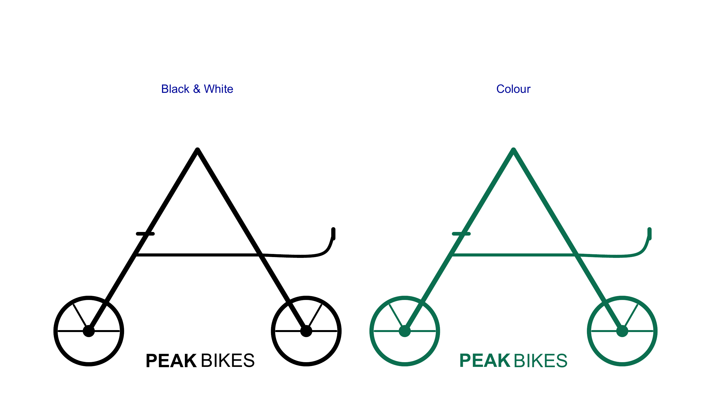
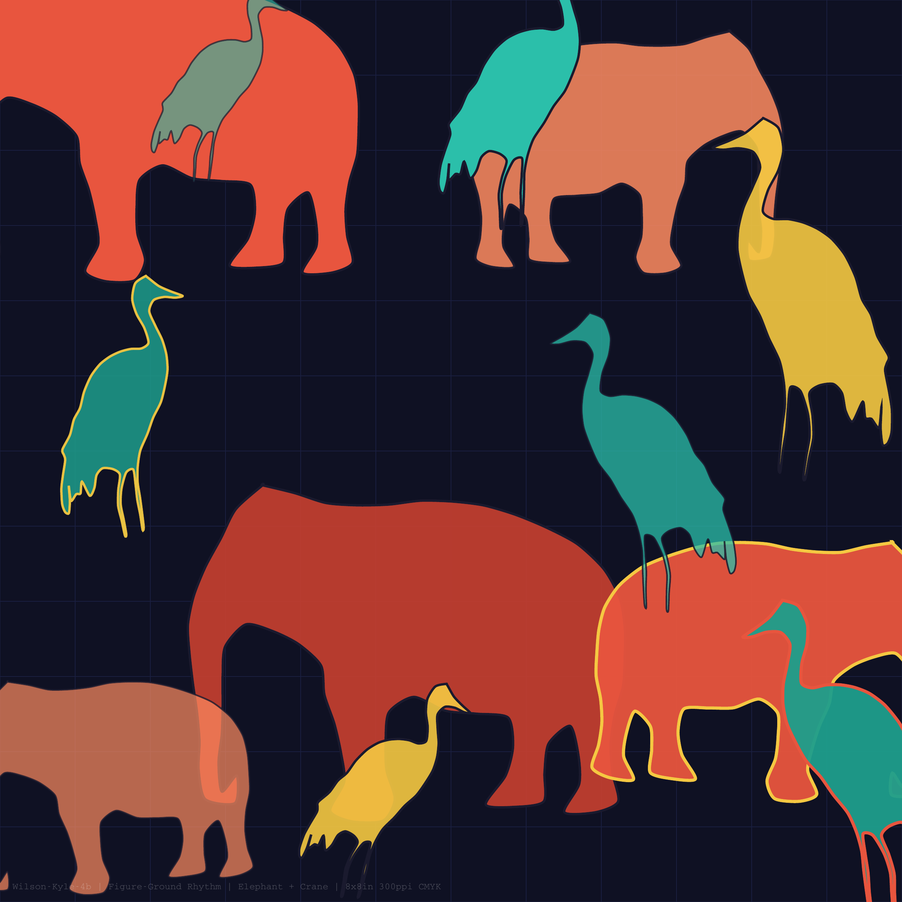
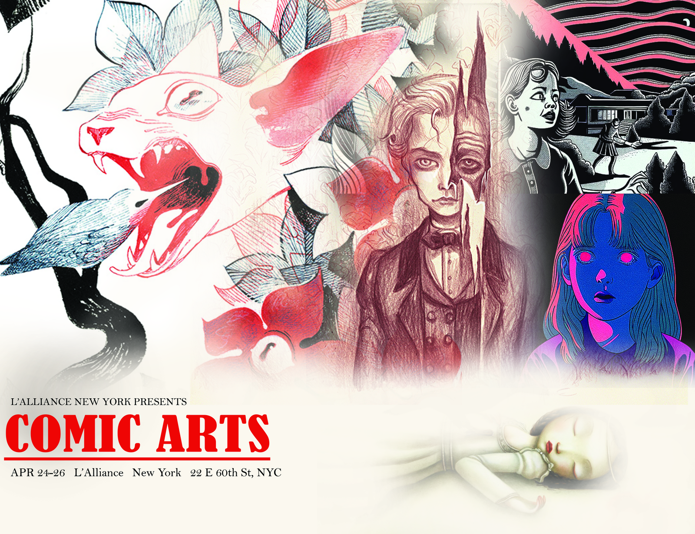

Selected design projects from MMA 100 (Visual Foundations) at BMCC. Logo design, figure ground work, and photo compositing.

Geometric mountain peak frame with integrated wheels, shown in black and white and color. Built in Illustrator.

8x8in composition exploring figure ground relationships through overlapping silhouettes and color layering. 300ppi CMYK.

Promotional banner compositing multiple illustration styles for L'Alliance New York's Comic Arts event.